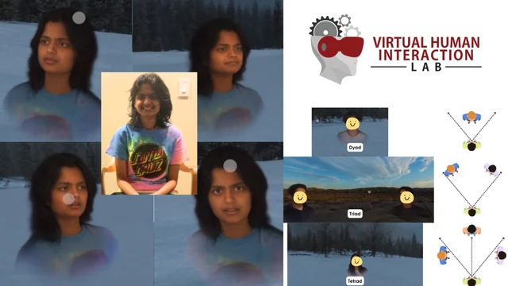

May 2025 – June 2026
Honors Thesis
For my honors thesis in Stanford’s Virtual Human Interaction Lab, I studied how spatiality and environmental immersion in XR teleconferencing affect the way people attend to one another. Groups of two, three, or four completed a collaborative task through photorealistic avatars, arranged either in a grid or in three-dimensional space. We also varied whether participants shared a virtual environment or could see their physical surroundings.
I developed the study protocols, recruited 143 participants, trained seven research assistants, and ran the sessions. My own statistical analysis focused on measures of visual attention during the conversations. Although spatiality appeared to facilitate more natural interactions, we did not find evidence of a corresponding improvement in measures of facial attention.
See: thesis.pdf · thesis-paper.pdf · thesis-slides.pdf · thesis-presentation.mp4
